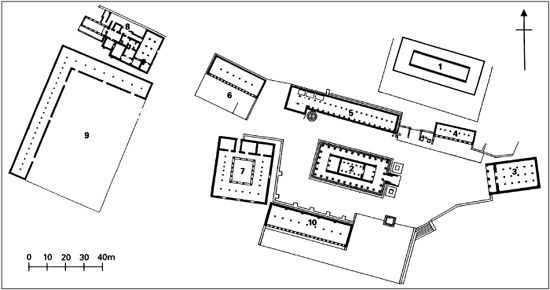

Here in Argos I had the ground to be a pillow, and the world’s wide fields to be a chamber…and humid vapours of cold Nocturna, to accompany the unwished-for bed of my repose.
(From William Lithgow, Totall Discourse of the Rare
Adventures and Painefull Peregrinations, 1632)
The Late Bronze Age in Greece is also called conventionally ‘Mycenaean’, as we saw in the last chapter. But it might in principle have been called ‘Argive’, ‘Achaean’, or ‘Danaan’, since the three names that Homer does in fact apply to Greeks collectively were ‘Argives’, ‘Achaeans’, and ‘Danaans’. This was at a time when ‘Hellenes’ had not yet come into general use as a universal descriptor, indeed, ‘Hellas’ originally meant just a quite small part of northern mainland Greece. Since this was central geographically and in itself politically unimportant, it was felt to be a suitable appellation for extension to the entire Hellenic world. The adjective ‘Panhellenic’ is first attested in the mid-seventh century, used to mean what later was called just ‘Hellenic’. So the concept of a common Hellenicity—Hellenic ethnicity—spread only slowly, over several centuries, during the Dark Age and Archaic periods.
However, to call the Mycenaean Greek period ‘Argive’ would have risked serious confusion with the city of Argos, situated just a few kilometres almost due south of Mycenae and dominated by two hills, Larissa and Aspis (‘Shield’). Whereas Mycenae lurks or skulks between two mountains and is hidden from casual view, Argos stands proud atop the steep peak of Larissa, its cone-shaped acropolis (see Glossary) effortlessly visible from the surrounding fertile plain, one of the largest and richest in all mainland Greece. (Today buried under a forest of oranges, a south-east Asian import, in antiquity the soil would have yielded chiefly grain, olives, and wine-grapes.) A few centres in mainland Greece maintained at least a continuity of habitation from the Late Bronze Age into the succeeding Early Iron Age, and emerged from the murk and gloom of the Dark Age relatively early; among the most important of these was Argos, profiting from the occlusion of both its major Bronze Age regional competitors, Mycenae and Tiryns.
The town boasts of the longest continuous occupation of any place in Greece, yet it was essentially a new proto-city of Argos that began to arise in the Dark Age of the eleventh century. This was new not just topographically or architecturally, but ethnically: a newly evolved linguistic grouping of Greeks calling themselves Dorians, traditionally thought of as immigrants from central Greece, claimed Argos as one of their three major Peloponnesian centres; the other two were Sparta and Messene. The Dorians indeed got as far south as Crete, so that historical Cnossos became a Dorian city too, perhaps actually founded from Argos, and from southern Greece they spread out east across the Aegean as far as south-western Turkey today (for example to Herodotus’s Halicarnassus) and the Greek offshore islands such as Rhodes. They must have migrated east across the Aegean by sea, obviously, probably by island-hopping; but whether they also arrived in the Peloponnese by sea or rather by an overland route is another, undecidable matter. For what it is worth, later Dorian settler myth commemorated a supposed original crossing of the Corinthian gulf at its narrowest by raft from Antirhion to Rhion, implying an otherwise land-based journey from north-west and central Greece down into the north-west Peloponnese. That legend is reconcilable, using some ingenuity, with what scanty archaeological remains we have from the relevant areas in the early Dark Age (eleventh to tenth centuries).
However, archaeologically, these Dorians are in general very hard to pin down on or in the ground, so much so indeed that, in the absence of any unambiguously unique and diagnostic ‘Dorian’ feature of material culture, the very existence of any sort of post-Mycenaean Dorian migration, let alone invasion, has been resolutely denied. Against that scepticism, there is to be set first the evidence of dialect. Even if John Chadwick was right to detect ‘Proto-Doric’ dialectal forms in amongst the language of the Linear B tablets, the emergence of Doric as a full-blown dialect of historical Greek—as of Ionic (see next chapter)—is agreed to be a post-Bronze Age, early Iron Age phenomenon. The simplest explanatory hypothesis is of a population movement of proto-Doric speakers from north Greece (Thessaly?), which later, as these early Dorians settled separate, often antagonistic communities, resolved itself into variations on a common dialectal substrate, Argive as distinct from Laconian (Spartan) and so on. Herodotus, in a fascinating but inevitably wholly speculative discussion of the seven ethnic groupings inhabiting the Peloponnese of his day, has this to say of the Cynurians (who occupied a territory marginally placed between the Argive and Spartan spheres of influence):
The Cynurians, being indigenous, seem to be the only Ionians [in the whole Peloponnese], but under the rule of the Argives they became thoroughly Dorianized with the passage of time.
Dorianization refers, apart from common dialect, to the sharing of certain institutional arrangements (three identically named pseudo-kinship ‘tribes’) and religious customs (an annual festival in honour of Apollo known as the Carneia). The Dorians of Argos, to differentiate themselves from Dorian Messene (Artemis) and Dorian Sparta (Athena), chose as their patron-goddess Hera, sister-wife in myth of great father Zeus himself. Her principal shrine, the Argive Heraeum (Fig. 2), lay at a distance of some 9 kilometres from the central, acropolis city-site, and it has been plausibly argued that the consciously created and maintained linkage between this extra-urban sanctuary and the central settlement on and around Larissa constituted a key to the formation of Argos’s original identity as a polis. The most famous myth attached to the Heraeum concerns the brothers Cleobis and Biton. When the oxen due to pull their priestess mother’s cart to a festival arrived too late, they substituted themselves as beasts of burden and got her to the shrine on time. She prayed to Hera to grant her sons some suitable recompense for their filial devotion, whereupon they promptly fell into an eternal sleep. Some scholars identify a pair of lifesize marble statues of young men, datable to the early sixth century BCE, as (non-veristic) images of Cleobis and Biton, but these were dedicated to Apollo at Delphi and other identifications are as or more probable. The marble used for them came from the island of Paros, which was considered the finest and purest source, and it is estimated that on average a lifesize marble figure would have taken a statuary a year to craft.
However, in the course of the eighth century even their large portion of the Argive plain was found increasingly unacceptably constricting by the expansionist Argives, and Argos came to exercise (as Herodotus correctly relates with respect to the Cynurians) a de facto hegemony over much of the region known as the Argolis, including the major Bronze Age centres of Mycenae and Tiryns. The establishment of this dominion sometimes involved the defeat and even expulsion of lesser neighbours, such as those of Asine on the coast, and their replacement by settlers from the metropolis; this was a form of internal colonization that obviated the need for very much in the way of overseas colonization by Argos. We may contrast the emigration that the much-poorer-in-land Corinth felt itself forced to practise in the second half of the eighth century (see Chapter 9). External influence was expressed in other, more peaceable ways too, via the export both of artworks and of Argive-trained craftsmen. Both these are visible in quantity, especially in the shape of large numbers of dedications of bronze and terracotta figurines of animals and men, at a site destined to become one of the principal hubs of Greek ethnic interaction and the development of a common idea of Greekness: the interstate, ‘international’ sanctuary devoted to Zeus of Mount Olympus located somewhat remotely in the north-west Peloponnese: ancient Olympia (see further Appendix).

Fig. 2. Argos—Argive Heraeum. Key: 1 Old temple 2 New temple 3 East building 4 North-east stoa 5 North stoa 6 North-west building 7 West building 8 Bath-house 9 Palaistra 10 South stoa
Early Argos was ruled by kings of some kind, mostly undistinguished apart from the shining exception of Pheidon, a hereditary king who Aristotle says rather curiously ‘turned himself into a tyrant’. Unfortunately, his dates are insecure (those attributed to him in antiquity range from the eighth to the sixth centuries in our terms), but it is at least tempting to associate him with the burgeoning population and wealth of the later eighth and earlier seventh century attested by the ever-increasing and increasingly wealthy graves that have been excavated at Argos and environs and well published by Greek and French archaeologists, and with the successful military endeavours of the same period, including a major victory over Sparta at Hysiae (in Cynuria on Argos’s south-eastern frontier) traditionally in 669. That marked the high-water mark of Argos’s military power in historical times, and never again did Argos defeat Sparta in battle.
One of these rich ‘Late Geometric’ period burials, appropriately, was that of a warrior, whose family marked him out as such by including among his extensive grave-goods a fine bronze crested helmet and an even finer bronze breastplate, as well as numerous iron spits with which to roast his animal (as opposed to human…) sacrificial victims. (Plate 5) This assemblage also functions for us as a kind of time-capsule of the state of warfare in the most advanced parts of southern Greece in the last quarter of the eighth century. On one hand, the helmet with its high stilted crest would not have been out of place on the head of a mighty warrior as depicted in the Homeric Iliad, entirely appropriate for the kind of longdistance, javelin-throwing duels in which Homer likes to depict his heroes engaging. It would not have been at all appropriate, though, for the kind of close-order, mass fighting in serried ranks that—as contemporary depictions on vases and other actual finds of armour and weapons tell us—was becoming the norm in the most aggressively land-hungry cities of the day. On the other hand, the all-over bronze corselet of our Argive hero speaks worlds for both the advance of technology and the overriding concern for bodily protection and tactical defence in warfare rather than offence.
What is missing still, however, from this burial assemblage is the prime item of equipment of the new type of Greek infantry warrior, namely his shield. For it was from his hoplon that the hoplitês almost certainly acquired his title. It was known also as the ‘Argive’ shield, presumably because that was either where it was invented or where the first unquestionably successful and most influential version was developed. Between about 750 and 650 BCE a new mode of fighting properly styled ‘hoplite’ was developed that no longer depended on the heroic prowess of a mighty individual warrior, and there is some reason for suspecting that Pheidon was intimately involved with that development. But for the full implications of this new twist to the Greek story we must wait until the chapter on Sparta (Chapter 7).